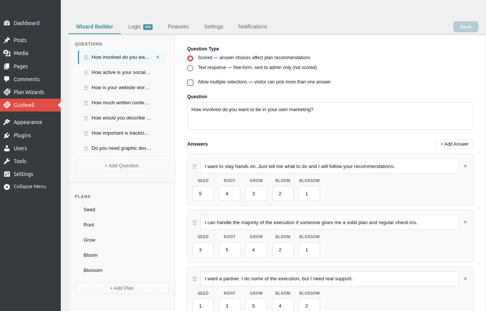
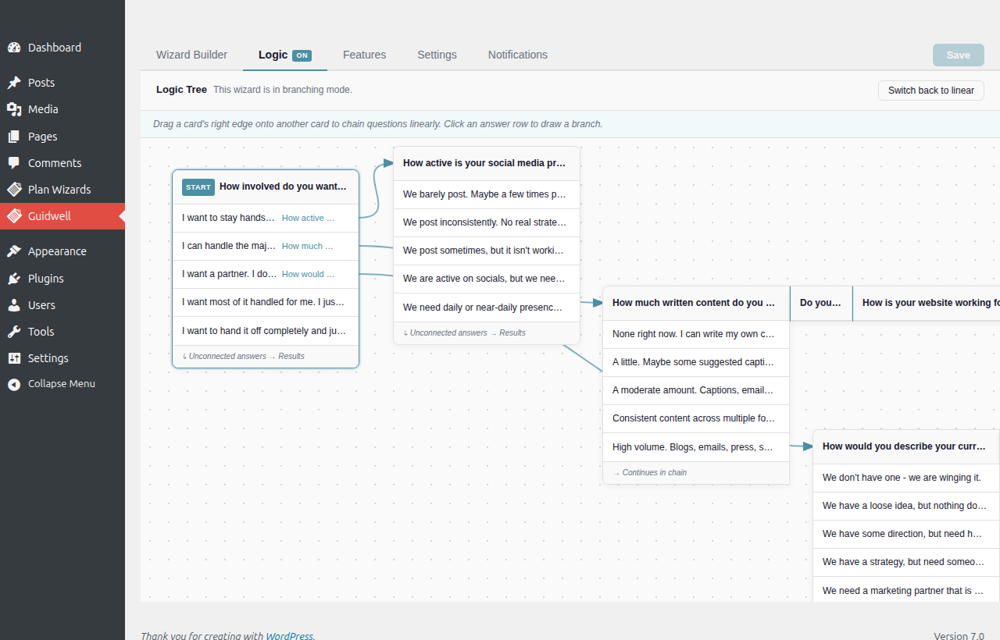
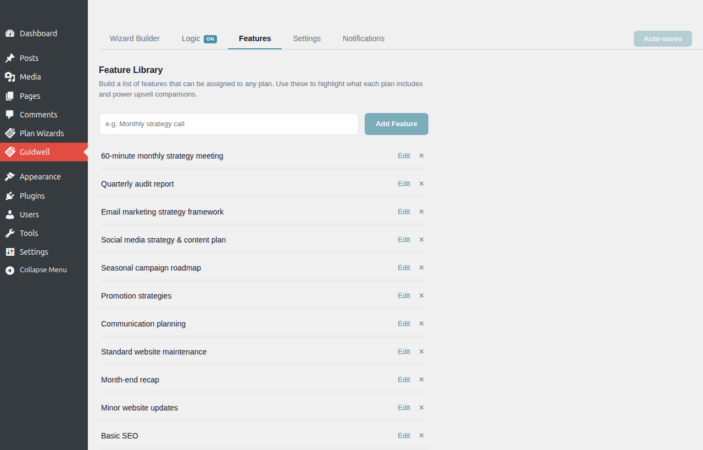
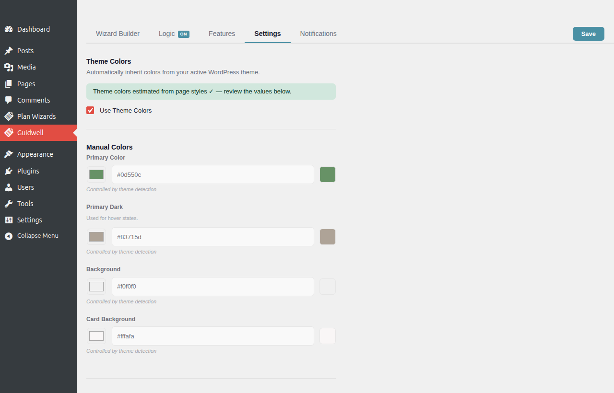
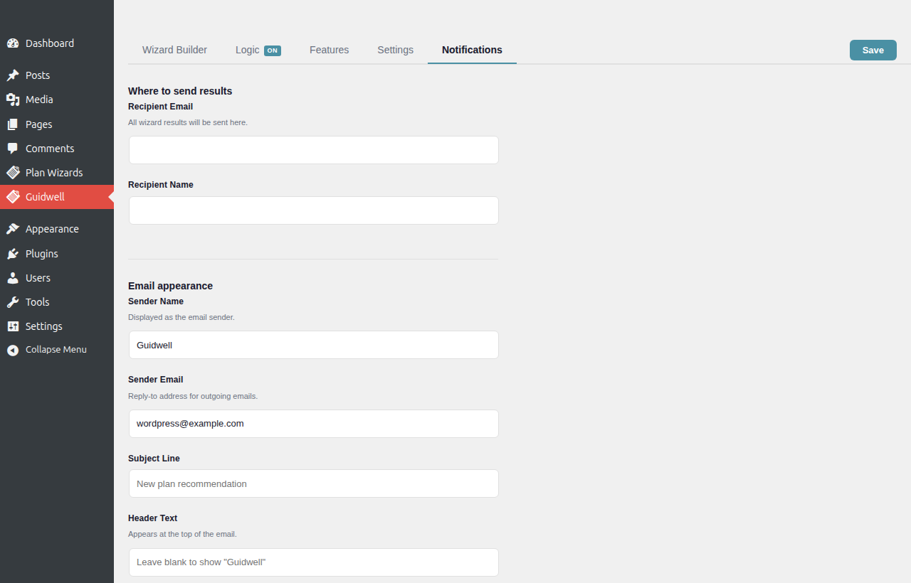
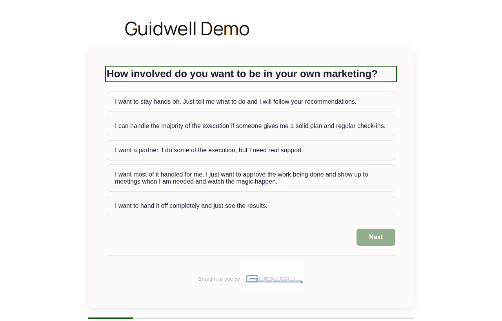
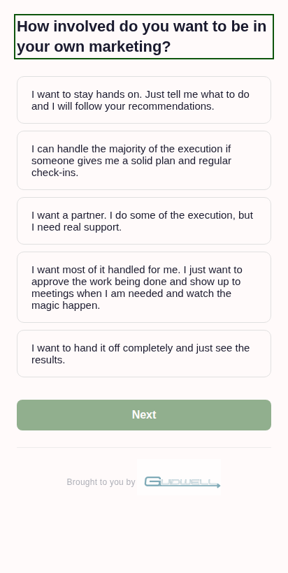
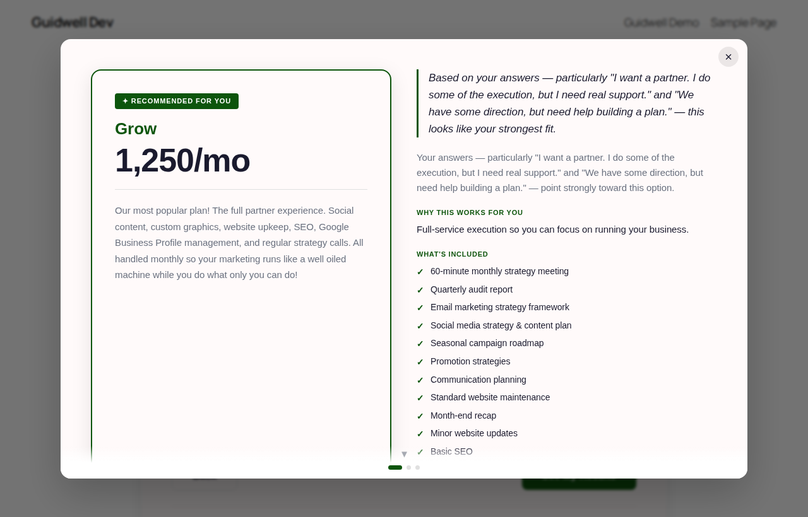

Complete Guide
Using Guidwell
A complete walkthrough of every tab in the Guidwell admin — from building your first question to routing visitors down branching paths that feel tailor-made for them.
Overview
Guidwell turns a common problem — "how do I help a visitor find the right plan?" — into an interactive experience that sells for you around the clock. Instead of a static pricing table that visitors scroll past, you give them a short, guided quiz. They answer a handful of questions about their goals, budget, and working style, and Guidwell surfaces the plan that fits them best.
The result isn't just a recommendation — it's a personalized moment. Visitors see a plan name, a price, a description written for them, and a checklist of exactly what they get. That specificity builds trust and dramatically reduces the friction between "browsing" and "buying."
The five tabs in the Guidwell admin each handle one piece of that experience. This guide walks through all of them, in order.
Wizard Builder
The Wizard Builder is your home base. Every time you open Guidwell, this is the tab you land on. It's divided into three panels: a questions sidebar on the left, a plans sidebar below it, and a right-panel editor that opens when you click anything.

Everything you build here feeds directly into the wizard your visitors experience. Changes are reflected in real time in the editor — click Save in the top-right when you're ready to persist them.
Questions
Questions are the heart of your wizard. Each question appears as a single focused screen in the visitor experience — one choice at a time, no scrolling, no overwhelm. Good questions feel like a conversation, not a form.
Adding a question
- Click the + Add Question button at the bottom of the questions sidebar.
- A new question appears in the list and the editor opens on the right. Type your question text — keep it conversational. "How involved do you want to be in your own marketing?" lands better than "Preferred level of client involvement."
- Add answers by clicking + Add Answer inside the editor. Each answer is a choice the visitor can select. Aim for 3–5 answers per question — enough to differentiate, not so many it feels overwhelming.
- Set a weight for each answer/plan combination in the scoring grid. (See Scoring below for a full explanation.)
- Click Save in the top-right of the tab bar when you're done.
Reordering questions
Drag any question in the sidebar up or down to change its position. In Linear mode, the sidebar order is the order visitors see questions. In Tree mode, order is determined by your logic connections — the sidebar order there is just for your organizational reference.
Deleting a question
Open a question in the editor and use the delete option at the bottom. If you have logic connections referencing that question, they'll be removed automatically — Guidwell keeps the canvas consistent so you don't end up with broken arrows.
Plans
Plans are the outcomes your wizard recommends. Think of them as your service tiers or packages — the things a visitor might ultimately buy. Guidwell will recommend exactly one plan per visitor, based on how their answers scored.
Editing a plan
Click any plan name in the lower sidebar to open it in the right-panel editor. Each plan has four fields:
- Name — what the plan is called. Shown as the headline in the results modal.
- Price — displayed prominently beneath the plan name. This is a display-only field — you handle payments through your own checkout process.
- Description — your personalized insight copy. This is your chance to speak directly to the visitor. Write it as if you're saying "based on what you told me, here's why this plan is right for you." Use second-person language and reference the context of the ideal client for that tier.
- CTA Button — the label and URL for the call-to-action button in the results modal. Send visitors directly to a checkout page, a contact form, or a booking link.
Adding and removing plans
Click + Add Plan at the bottom of the plans sidebar. To delete a plan, open it in the editor and use the delete option. Removing a plan also removes its scoring column from every question — weights are cleaned up automatically.
Scoring
Scoring is how Guidwell decides which plan to recommend. For every answer in your wizard, you assign a weight for each plan. When a visitor finishes the quiz, Guidwell adds up those weights across all their answers and recommends the plan with the highest total score.
How to set weights
The scoring grid shows each answer as a row, and each plan as a column. The maximum weight per cell equals the number of plans in your wizard — so if you have 5 plans, the scale is 0–5; with 3 plans, it's 0–3. Click any cell and enter a number:
- 0 — this answer says nothing about affinity for this plan
- Low (1–2) — weak signal: a slight lean toward this plan
- High (near max) — strong signal: this answer meaningfully suggests this plan
- Max — very strong match: this answer is a clear, confident indicator for this plan
You don't need every answer to add up perfectly. The system is comparative — it recommends whichever plan accumulates the most points, not a plan that crosses a threshold. Focus on making the relative differences between plans meaningful.
Logic Trees ⭐
The Logic tab is where Guidwell transforms from a quiz tool into a genuine recommendation engine. This is the feature that makes your wizard feel personal — because instead of sending every visitor through the same questions in the same order, you route them down different paths based on what they tell you.
Imagine a visitor who says they're a solo freelancer versus one who's running a ten-person team. Those two people don't need the same follow-up questions. The solo freelancer needs questions about capacity, hands-on support, and high-touch engagement. The team lead needs questions about scale, multi-channel strategy, and delegation. With Logic Trees, they each get exactly that — and both arrive at a recommendation that feels like it was built for them specifically.
That's the power of branching. And it's the single biggest reason visitors trust the recommendation they receive at the end. When the questions feel relevant to your situation, the answer feels credible.

Linear vs Tree Mode
When you open the Logic tab, the first thing you'll notice is a mode toggle: Linear or Tree. This is a foundational choice about how your wizard flows for every visitor.
Linear mode works on every plan and requires zero Logic tab configuration — just build your questions and save. Switch to Tree mode when you want to add branching based on visitor answers.
Building Branches
When Tree mode is active, the Logic canvas shows all your questions as draggable cards. Each card lists the answers for that question. Your job is to wire them together: draw an arrow from an answer to the question that should follow when a visitor picks that answer.
Step-by-step: building your first branch
- Open the Logic tab and confirm you're in Tree mode using the toggle in the top bar of the canvas.
- Your question cards appear on the canvas. If the canvas looks empty, make sure you've saved at least two questions in the Wizard Builder tab first.
- Identify your opening question — the first question every visitor sees. There should be one card with no incoming arrows pointing to it. That's your starting point.
- Hover over an answer row on a question card. A small connection handle (a circle or dot) appears on the right edge of that answer row.
- Click and drag from that handle toward the question card you want to show next. A blue arrow appears as you drag — guide it to the target card and release to create the connection.
- Repeat for each answer you want to branch. Any answer left unconnected will end the quiz at that point and display results based on scores collected so far.
- Drag cards around the canvas to organize your layout. Position has no effect on the logic — only the arrow connections matter.
- Click Save in the top-right when your branching logic is complete.
Rearranging and cleaning up the canvas
Cards can be freely dragged to any position on the canvas. There's no functional meaning to where a card sits — only which answers connect to which questions. A common organizing pattern: put your opening question at the top center, fan out the first-level branches below it, and place "leaf" questions (the final questions in each path, leading to results) at the bottom. This gives you a clear top-down mental model of the entire flow.
Editing and removing connections
Click any blue arrow on the canvas to select it. A delete button appears — click it to remove that connection. The answer that previously triggered that route returns to its unconnected state, meaning a visitor who picks it will see results immediately rather than continuing to another question.
Watch the wizard in action
The best way to understand what you're building is to see a visitor navigate a branched wizard from start to finish. Watch how the path changes based on the choices they make — and notice how the results modal at the end feels like a natural conclusion to the conversation:
The visitor never sees a flowchart or a decision tree — they just see clear questions, one at a time, with a progress bar showing how close they are to their recommendation. The branching happens invisibly. What they experience is a wizard that seems to understand them. That's what gets your CTA clicked.
What makes a question worth branching on?
Not every question deserves a branch. Reserve branching for questions where the answer fundamentally changes what's relevant next. Strong branching questions tend to be:
- Context gates — "Are you a solo practitioner or do you have a team?" The follow-up questions for each path are completely different.
- Priority filters — "What matters most to you right now: results speed, budget, or long-term strategy?" Each answer shifts which follow-up features matter most to discuss.
- Scope qualifiers — "Are you starting from scratch or building on an existing foundation?" Two very different starting points — they need different questions to arrive at a meaningful recommendation.
Questions about preference, communication style, or tone — where both answers would logically lead to the same next question — usually don't need a branch. Let the scoring weights do that differentiating work instead.
Tier Limits for Logic Trees
Branching depth is measured in "levels" — a single fork counts as one level. A fork inside a fork is two levels. Here's what each tier supports:
| Tier | Mode | Branching Depth | Max Questions | Max Answers / Question |
|---|---|---|---|---|
| Free | Linear only | None | 5 | 5 |
| Starter | Linear + Tree | 1 level | 15 | 10 |
| Pro | Linear + Tree | 3 levels | 50 | 10 |
| Agency | Linear + Tree | Unlimited | 100 | 20 |
A branching path in practice
Here's what a two-level tree looks like. The opening question forks into two paths, and each path has its own additional branch:
In this structure, solo visitors and team-based visitors never see the same second question. Because Q2a and Q2b are directly relevant to each visitor's context, they feel heard — not categorized. That emotional resonance is what makes the final recommendation land with confidence rather than feeling like a coin flip.
Features Library
The Features tab is your library of service deliverables — the specific things your plans include. You build the list once here, then assign individual items to whichever plans they belong to. Those items appear as a "What's Included" checklist inside the results modal, right below the plan description.

Checklists work because they make abstract promises concrete. "Comprehensive support" is vague. "Monthly 60-minute strategy call, weekly check-in email, quarterly audit report" is something a visitor can read, evaluate, and get excited about. The Features Library makes it easy to manage those specifics without re-typing them for every plan.
Adding a feature item
- Click + Add Feature on the Features tab.
- Type the feature name. Keep it short and benefit-forward — "Monthly strategy call" reads better than "1x 60-minute call with a member of the strategy team."
- Use the plan checkboxes to assign this feature to one or more plans. A feature can belong to multiple plans — for example, "Monthly strategy call" might be included in your top three tiers.
- Save. The feature immediately appears in the results modal for any plan it's assigned to.
Reordering features
Drag features in the list to reorder them. The order here is the order they appear in the checklist inside the results modal. Put the most impressive or most expected items first — the first three items in a checklist get the most visual attention.
Writing great feature items
- Use noun phrases, not sentences. "Quarterly strategy audit" reads better than "We'll audit your strategy every quarter."
- Lead with the cadence or benefit. "Weekly check-in call" tells a visitor more than "Call with account manager."
- Keep items parallel in format — it makes the checklist look clean and professional.
- Be specific. "2,000-word blog post per month" is more compelling than "Content creation."
Settings
The Settings tab controls how your wizard looks, manages your license, and lets you back up or transfer your entire wizard configuration.

Branding
Your wizard lives on your site, inside your brand. By default, Guidwell uses its own color scheme — which is fine for getting started, but you'll want to match your brand before the wizard goes live to real visitors.
The Branding section lets you set a primary color for buttons, progress indicators, and accent elements inside the wizard. Enter your brand hex code, preview the change, and save. It takes effect immediately for all future visitors.
Watermark
All plans below Agency display a small "Brought to you by Guidwell" credit at the bottom of the wizard. The Agency plan includes the option to remove it entirely — ideal for client sites where the wizard should feel like a bespoke part of their brand, not a third-party tool.
License Key
After purchasing a paid plan, you'll receive a license key by email. Enter it in the License section of the Settings tab and click Activate. Guidwell verifies the key and unlocks your tier's features immediately — no restart needed.
Your current tier and license status are displayed at the top of the Settings tab. If you upgrade your plan, you'll receive a new key. Deactivate the old one and enter the new key to apply your updated tier.
Import / Export
Your entire wizard configuration — questions, answers, weights, plans, features, and logic connections — can be exported as a single JSON file. This is useful for backups before major changes, sharing a configuration between sites, or handing a pre-built wizard to a client.
Exporting your wizard
Click Export Wizard in the Settings tab. A JSON file downloads immediately. Keep it somewhere safe — this is a complete snapshot of everything you've built and can restore your wizard in seconds.
Importing a wizard
Click Import Wizard, select a previously exported JSON file, and confirm. The import replaces your current wizard configuration — it's a full overwrite, not a merge. Export your current wizard first if you want to preserve it before importing.
Notifications
The Notifications tab controls what happens after a visitor completes your wizard — both what you receive (admin alerts) and what you collect (visitor contact info on the results screen).

Admin notifications
When a visitor completes your wizard, Guidwell can send you an email summary. The notification includes which plan was recommended and — if email capture is enabled — the visitor's name and email address.
Enter the email address you want alerts sent to, toggle notifications on, and save. That's all there is to it. Every completed wizard sends a notification in real time, so you always know immediately when someone has self-qualified through your wizard.
Email capture
Email capture adds a name and email field to the results screen, displayed just before the visitor sees their recommended plan. You choose whether it's required (they must enter their info to unlock results) or optional (they can skip it and go straight to results).
When a visitor submits their contact info, it's included in your admin notification email. In future releases, captured emails will also appear in the Guidwell analytics dashboard for easier management.
Email integrations
On Agency plans, captured email addresses flow directly to your email marketing platform — straight into your CRM or email list without any manual copying or export. Email integration options are configured in the Notifications tab under "Integrations."
Custom SMTP
By default, Guidwell sends notification emails through WordPress's built-in wp_mail() function, which relies on your server's outgoing mail setup. If your host has poor deliverability or you'd prefer to route email through a dedicated provider like SendGrid, Mailgun, or Postmark, the Custom SMTP section lets you enter your credentials directly.
Fill in your SMTP host, port, username, and password, then click Test Connection to verify everything works before saving. A confirmation email is sent to your admin address as proof.
Visitor Experience
You've built the wizard. Now let's look at it from your visitor's perspective — because understanding what they see and feel helps you write better questions, craft more compelling plan descriptions, and set the wizard up so it actually converts.
The wizard on your page
Guidwell embeds on any WordPress page or post using the shortcode [guidwell_wizard]. Drop it inside a page builder block, a classic editor text block, or anywhere shortcodes are supported. The wizard renders as a clean, centered card that adapts to any layout without extra CSS.

Each question appears as a single full card. One question, one set of answer buttons, one forward action. The visitor clicks their answer and moves to the next step — no scrolling, no multi-field forms, no wondering whether they've filled everything in. The progress bar at the top shows how far along they are, which reduces abandonment on longer wizards significantly.
Mobile experience
Guidwell is fully responsive out of the box. On mobile, the wizard expands to the full width of the screen, answer buttons stack vertically for easy thumb tapping, and nothing requires pinching, zooming, or horizontal scrolling. Your wizard works just as well for someone on their phone in a coffee shop as it does for someone at a desk.

The results modal
After answering the final question, the visitor sees the results modal — the payoff for everything they've just invested. This is the most important screen in your wizard, and the one that most directly drives conversions.

The results modal contains:
- The recommended plan name — prominent, confident, no hedging or "you might like" language
- The price — right up front, so visitors can immediately self-qualify
- The plan description — your personalized insight copy that connects their experience to why this plan is right for them
- The features checklist — specific deliverables from your Features Library, listed cleanly for this plan
- The CTA button — "Book a discovery call," "Get started," "See full details," or whatever fits your sales process
If email capture is enabled, a name/email field appears just before the results reveal — giving visitors the opportunity (or requirement, depending on your setting) to share their contact info in exchange for seeing their personalized recommendation.
Retaking the wizard
Visitors can retake the wizard from the results modal via a "Start over" link. This resets their answers and sends them back to the first question. Useful for visitors who want to see how different answers change the recommendation — and a smart way to keep them engaged with your service offerings longer.
Tips for embedding and promoting your wizard
- Give it a dedicated page. A standalone "Find Your Perfect Plan" page consistently outperforms embedding the wizard mid-page where it competes for attention with other content.
- Remove distractions. If your theme supports it, hide the site navigation and sidebar on the wizard page. A distraction-free, full-width layout increases completion rates noticeably.
- Link to it from your pricing page. Visitors browsing your pricing table are already interested — they just need help deciding. Offer the wizard as a way to "find the right plan for you" and you convert browsers into engaged prospects.
- Add a teaser headline above the shortcode. Something like "Not sure which plan fits your situation? Answer 5 quick questions." Sets expectations, reduces uncertainty before the wizard starts, and frames the experience as helpful rather than salesy.
- Share it in proposals and follow-up emails. Linking a prospect to your wizard in a follow-up email ("I thought this might help clarify which plan fits your goals") is a low-pressure, high-value way to re-engage someone who's gone quiet.